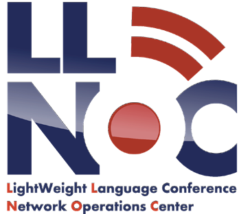

カテゴリ
会場ネットワーク
ネットワーク
会場ネットワーク
LLまつりでは以下の無線ネットワークを提供しています。

また、ネットワークの運用情報等を @llnocteam にて公開しています。
ネットワークに関する問題等ありましたら、 @llnocteam までご連絡をお願いします。
| SSID | 種類 |
|---|---|
| ll-matsuri | 802.11a |
| ll-matsuri-g | 802.11g |
回線・機材提供
LLまつりでは以下の企業様のご協力とNOCチームにより構築・運用しています。
アラクサラネットワークス株式会社様
株式会社インターネットイニシアティブ様
インターネットマルチフィード株式会社様
構築・運用
LLまつりの会場ネットワーク提供は、LLNOCチームが構築・運用しています。

LLNOCチーム